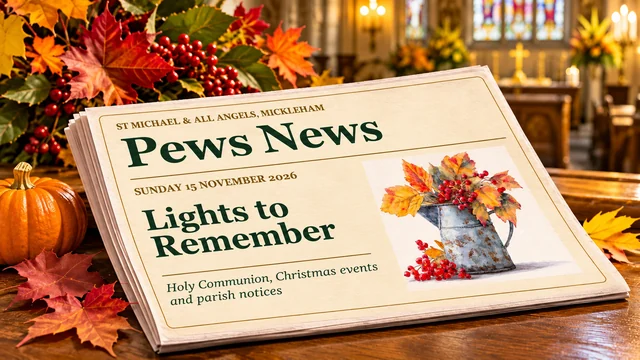

Pews News — 15 November 2026
Holy Communion, Lights to Remember, parish notices and Christmas events.
Read this edition
News
Latest news, events and stories
from our parish.
Showing 7 news items.

Holy Communion, Lights to Remember, parish notices and Christmas events.
Read this editionRead our online editions and browse previous PDFs.
Browse Pews News